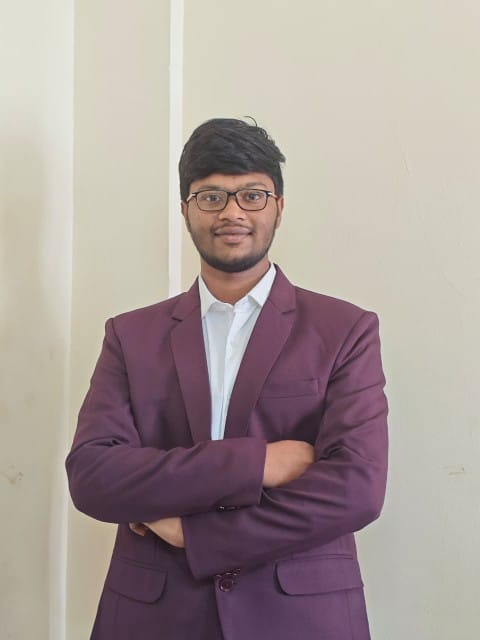

B.Tech ECE | IIT Bhubaneswar
Designing next-generation digital systems with expertise in VLSI, FPGA, RISC-V architecture, and GPU programming
I'm a B.Tech student in Electronics and Communication Engineering at IIT Bhubaneswar (2023–Present, CGPA: 7.81), specializing in VLSI/FPGA design, RISC-V processor architecture, and SoC integration.
I have hands-on experience with Verilog, SystemVerilog, CUDA programming, and multiple FPGA boards including Basys3, ZedBoard, PYNQ-Z2, and ZCU104. Currently learning SystemVerilog, UVM, and Physical Design (RTL-to-GDSII).
My passion lies in designing efficient digital systems—from processor architectures to complete SoC implementations. I enjoy solving complex hardware design challenges and pushing the boundaries of semiconductor technology.
CGPA
Major Projects
FPGA Boards
Scholarship
2023 – Present
B.Tech in Electronics and Communication Engineering
CGPA: 7.81 (Till 5th Semester)
2021 – 2023
CBSE (Class 11 & 12)
Score: 467/500
2019 – 2021
State Board (Upto Class 10)
Score: 599/600
May 2025 – Jul 2025
Under: Dr. Devashree Tripathy, CSE, IIT Bhubaneswar
Aug 2024 – Present
Organization: NSS, IIT Bhubaneswar
2023 – Present
Organizations: Wissenaire & Pravaah, IIT Bhubaneswar
Sep 2024 – Present
Organization: Sah Astitva (Animal Welfare Society), IIT Bhubaneswar
Jan 2026
Configured Zynq PS using Vivado block design and successfully booted Linux on the PYNQ-Z2 board via SD card. Explored PS-PL integration and tested basic peripheral communication (GPIO, UART) from Linux userspace.
Dec 2025
Studied AMBA AHB protocol and explored GRLIB open-source IP library with NOEL-V RISC-V SoC framework. Integrated a custom AHB slave peripheral into the NOEL-V subsystem targeting ZCU104 (Zynq UltraScale+). Gained hands-on understanding of SoC bus interconnect design and IP integration workflows.
Dec 2025
Designed a 32-bit RISC-V (RV32I) processor, progressively building single-cycle, multi-cycle, and 5-stage pipelined architectures. Implemented hazard detection and data forwarding logic; supported R/I/S/B-type instructions. Synthesized and validated on FPGA using Xilinx Vivado with functional verification through testbenches.
Jun 2025
Designed a 5-stage pipelined 32-bit MIPS processor with instruction fetch, decode, execute, memory, and write-back stages. Supported arithmetic, logical, load/store, and branch instructions with two-phase clock architecture.
May 2025
Designed UART transmitter and receiver modules with configurable baud rate and FIFO buffers. Verified reliable data transmission through hardware testing using PuTTY terminal. Implemented proper synchronization and timing control for serial communication.
Apr 2025
Designed bfloat16 floating-point addition, subtraction, and multiplication units in Verilog. Synthesized and tested on Basys3 FPGA using Xilinx Vivado. Implemented results visualization via switch inputs and LED outputs.
Dec 2024
Designed a Type-2 PLL for stable frequency amplification. Developed PCB in KiCad, soldered components, and tested with oscilloscope. Validated circuit performance and frequency stability.
Mar 2026
Designed and built a radar scanning system using Arduino Uno, HC-SR04 ultrasonic sensor, and SG90 servo motor. Servo motor rotates the ultrasonic sensor 0°–180° to scan surroundings and detect objects within range. Developed real-time radar visualization interface using Processing IDE displaying detected objects with distance and angle. Implemented serial communication between Arduino and Processing for live data streaming.
2024
Collaborated to develop the NSS IIT Bhubaneswar website using AI tools, creating a user-friendly platform for the team. Designed responsive web pages with enhanced UX and seamless navigation for volunteers and community engagement.
2025
Led a team to design a low-cost respiratory monitoring system using sensors for asthma/COPD patients. Integrated IoT technology for real-time health monitoring and data collection. Secured Top 30 position in Sense2Scale Hackathon 2025 for innovative healthcare solution.
2024
Designed a grocery store website using HTML, CSS, and JavaScript for GC Webthon competition. Developed responsive web pages with enhanced user experience and intuitive product browsing interface. Implemented shopping cart functionality and hosted on GitHub Pages.
Awarded INR 1,00,000 LPU Scholarship for outstanding academic performance.
Secured 53rd rank in LPU NEST exam
Secured Top 30 position in Sense2Scale Hackathon 2025.
Project: Respire India – Low-Cost Respiratory Monitoring System
I'm always open to discussing new projects, internship opportunities, or collaborations. Feel free to reach out!